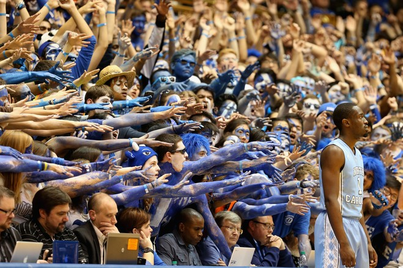

About Us
This site is Tarheel made and was created to provide the latest news, stats, roster, and our analysis for the UNC Basketball team! As Tarheel fans ourselves we know you will enjoy our content as you share the same love we have for our favorite team.

UNC Basketball has a rich history and we would love for you to follow us along their journey as we share coverage that will keep you the most up to date. Stay updated through our newsletter and blog!